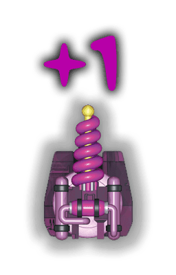
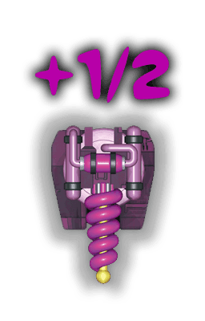
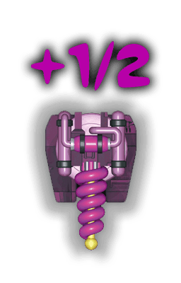

Děla
 Děla mohou mířit do libovolného směru. Těsně před hlavní se nesmí nacházet žádný jiný dílek. Jakmile je dělo přivařeno na místo, pole před ním zbarví do červena, aby bylo poznat, že sem už dílek umístit nemůžeš.
Děla mohou mířit do libovolného směru. Těsně před hlavní se nesmí nacházet žádný jiný dílek. Jakmile je dělo přivařeno na místo, pole před ním zbarví do červena, aby bylo poznat, že sem už dílek umístit nemůžeš.

Na cestě vesmírem na tebe čekají mnohá nebezpečí. Budeš muset bojovat s nepřáteli, probíjet se Bojovou zónou nebo ničit velké meteory. To je důvod, proč nutně potřebuješ co nejvíce děl. Nejefektivnější je stavět děla na obvodu lodi.
Většinou upotřebíš děla namířená dopředu. Ale pokud přiletí velký meteor ze strany či zezadu, přijdou vhod i děla namířená těmito směry. Děla namířená do strany a dozadu mají při sčítání pouze poloviční sílu.
Dvojitá děla
 I před dvojitými děly musíš nechat jedno volné pole, stejně jako před jednoduchými. Dvojité dělo je ale 2× silnější a za každé jeho použití musíš zaplatit jednu baterii
I před dvojitými děly musíš nechat jedno volné pole, stejně jako před jednoduchými. Dvojité dělo je ale 2× silnější a za každé jeho použití musíš zaplatit jednu baterii  .
.

Takže nezapomeň na baterky!
Síla děl
Když narazíš na nepřítele nebo na Bojovou zónu, budeš muset určit sílu svých děl. Jednoduchá děla se aktivují automaticky a případně se připočte i bonus za fialového mimozemšťana.
Vedle svého avataru vidíš aktuální sílu děl. Chceš-li využít i některá dvojitá děla, klikni na tolik baterií  , kolik děl chceš aktivovat. Pokud ještě změníš názor, klikni na nabité dvojité dělo, čímž baterii vrátíš na její původní místo. Poté, co aktivuješ všechna požadovaná děla, klikni na ikonu
, kolik děl chceš aktivovat. Pokud ještě změníš názor, klikni na nabité dvojité dělo, čímž baterii vrátíš na její původní místo. Poté, co aktivuješ všechna požadovaná děla, klikni na ikonu  pro potvrzení.
pro potvrzení.
Jak se vypočítá síla děl?

Každé jednoduché dělo mířící dopředu přidává do síly +1.

Každé dvojité dělo mířící dopředu přidává +2, pokud za jeho použití zaplatíš baterii  .
.
 Děla mířící do stran nebo dozadu se počítají za polovinu:
Děla mířící do stran nebo dozadu se počítají za polovinu:
+ 1/2 za jednoduché dělo…

 …nebo 1 za dvojité dělo zaplacené baterií
…nebo 1 za dvojité dělo zaplacené baterií  .
.
 Fialový mimozemšťan přidává +2 k celkové síle děl, ale jen pokud je síla alespoň 1. (Je to střelec. Vážně se na nepřátele nevrhne jen s holými chapadly.)
Fialový mimozemšťan přidává +2 k celkové síle děl, ale jen pokud je síla alespoň 1. (Je to střelec. Vážně se na nepřátele nevrhne jen s holými chapadly.)
Zničení velkých meteorů
Srážce s velkým meteorem můžeš zabránit tím, že jej rozstřílíš na kousky dělem namířeným správným směrem.
Pokud meteor přilétá zepředu, musí být dělo umístěné ve stejném sloupci jako meteor.
Meteor přilétající ze strany lze sestřelit dělem umístěném ve stejné řadě a v obou sousedních řadách.
Meteor přilétající zezadu lze sestřelit dělem umístěném ve stejném sloupci a v obou sousedních sloupcích.
Jednoduché dělo meteor odstřelí automaticky. Míří-li na mateor dvojité dělo, můžeš si vybrat, jestli kliknutím zaplatíš baterii  , a tak dělo aktivuješ. Samozřejmě se můžeš rozhodnout nic neplatit a nechat se meteorem trefit. (Jau!)
, a tak dělo aktivuješ. Samozřejmě se můžeš rozhodnout nic neplatit a nechat se meteorem trefit. (Jau!)